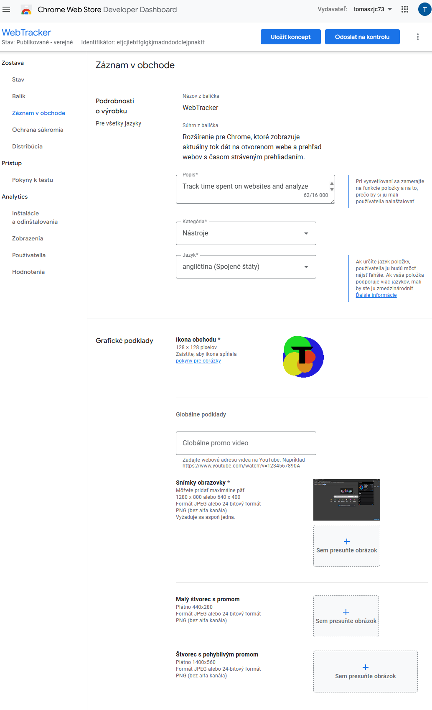
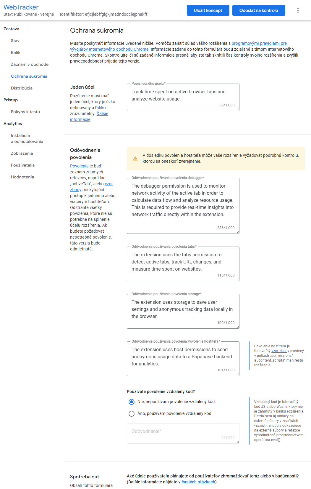
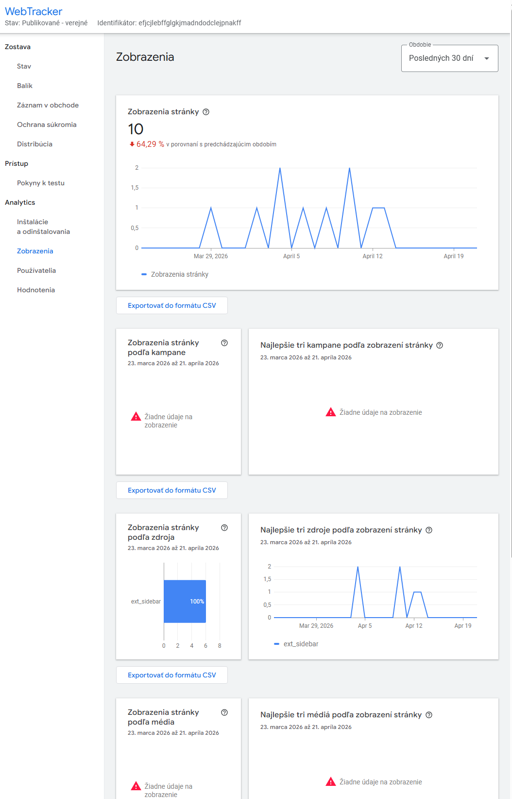

⏱️
Meranie času na weboch
Rozšírenie sleduje, koľko času používateľ trávi na aktívnych kartách a vytvára prehľad podľa webov a domén.
WebTracker je rozšírenie pre prehliadače s jadrom Chromium. Sleduje čas strávený na aktívnych kartách, zobrazuje tok dát a vytvára prehľad o tom, ako používateľ pracuje s webom počas bežného prehliadania.
Stránka je pripravená ako produktová prezentácia pre predmet aj pre GitHub Pages. Zdôrazňuje hlavné funkcie, technické pozadie a dôraz na ochranu súkromia.
Rozšírenie sleduje, koľko času používateľ trávi na aktívnych kartách a vytvára prehľad podľa webov a domén.
WebTracker zobrazuje aktuálnu sieťovú aktivitu otvorenej stránky a pomáha rýchlo identifikovať náročnejšie weby.
Vizuálne karty, súhrny a grafy robia z technických údajov zrozumiteľný dashboard pre bežného používateľa.
Projekt je navrhnutý pre Manifest V3, takže je vhodný pre Chrome, Edge, Brave, Operu a ďalšie Chromium prehliadače.
Dáta sa ukladajú lokálne a pri rozšírenom režime iba anonymne. Stránka obsahuje aj samostatnú Privacy Policy.
Stránka dopĺňa ikonu, screenshoty, opis produktu a ďalšie podklady, ktoré sa hodia aj do Chrome Web Store.
Tok používateľskej práce je navrhnutý jednoducho: aktivita sa zachytáva na úrovni karty, prepočíta sa na metriky a zobrazí sa v prehľadnom rozhraní.
Rozšírenie identifikuje otvorenú stránku, zmeny URL a čas, ktorý používateľ na danej karte naozaj trávi.
Zachytávajú sa údaje potrebné na výpočet času, tok dát a ďalšie sieťové ukazovatele pre aktívny web.
Údaje sa spracujú a uložia tak, aby z nich bolo možné vytvárať súhrny, grafy a výpisy podľa domén.
Používateľ dostane okamžitý prehľad o aktívnej stránke aj dlhodobejší obraz o svojom prehliadaní.
WebTracker je vhodný ako študijný projekt aj ako praktický nástroj pre používateľov, ktorí chcú mať väčšiu kontrolu nad tým, ako využívajú web.
Nižšie sú pripravené ilustračné zábery z publikácie rozšírenia a analytických obrazoviek. Po nahratí do repozitára ich môžeš ľahko nahradiť vlastnými finálnymi screenshotmi aplikácie.

Pripravený záznam v obchode s ikonou, stručným opisom produktu a miestom pre prezentačné screenshoty.

Zhrnutie účelu rozšírenia a odôvodnenie povolení, ktoré súvisia so sledovaním aktívnej stránky a ukladaním údajov.

Ukážka metriky zobrazení a trendov, ktorá podporuje myšlienku prehľadného dashboardu aj ďalšieho rozvoja produktu.
Produktová stránka má jasne komunikovať, čo extension robí, aké dáta používa a prečo. To je dôležité pre používateľa aj pre kontrolu v store.
Spĺňa požiadavku na prezentačnú stránku produktu a zároveň z nej vieš urobiť verejnú landing page pre projektový pitch.
Text je písaný tak, aby pôsobil profesionálne, ale zostal zrozumiteľný aj pre školskú prezentáciu a verejný produktový web.
Architektúra postavená na modernom modeli rozšírení pre prehliadače s jadrom Chromium.
Logika beží na pozadí a zabezpečuje zber udalostí, prepočet metrík a komunikáciu s rozhraním rozšírenia.
Projekt ráta s lokálnym ukladaním a s možnosťou anonymného backendového spracovania podľa potreby.
Do repozitára stačí nahrať index.html, styles.css, priečinok assets/ a voliteľne upraviť odkazy na GitHub, Chrome Store alebo demo video.